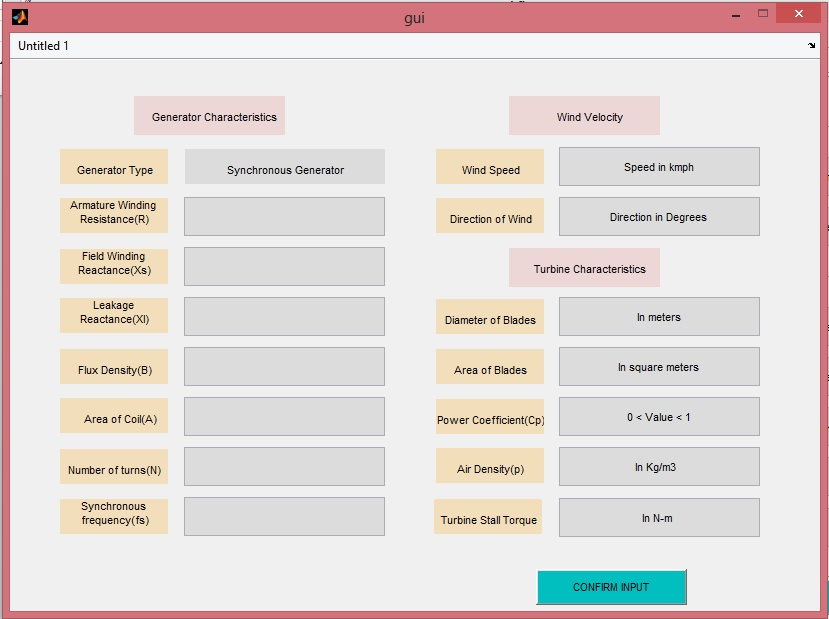
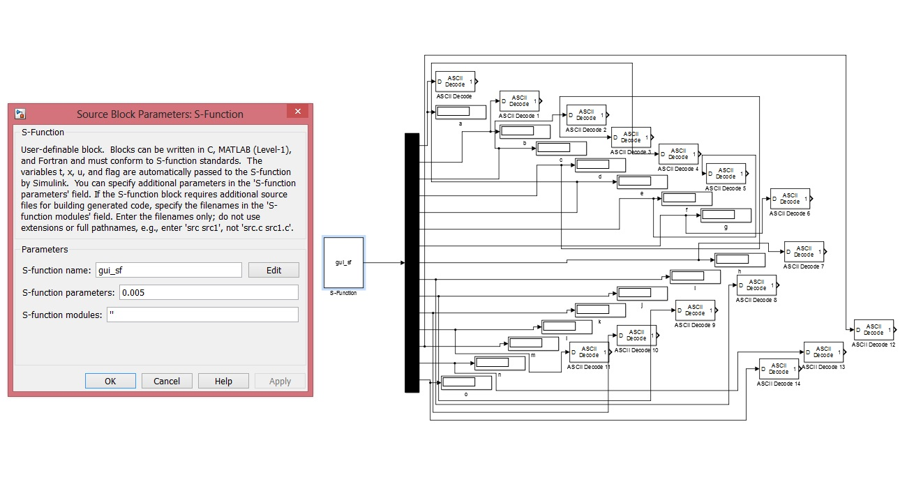
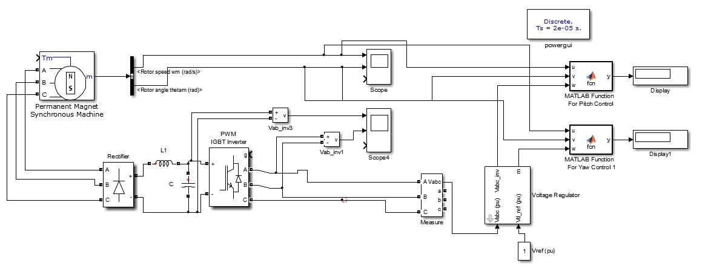
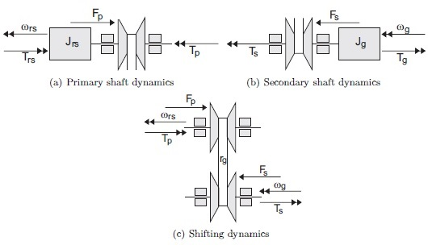

SEPTEMBER-NOVEMBER 2016| ELECTRICAL ENGINEERING DEPARTMENT | MNIT JAIPUR
OBJECTIVE
The objective was to design a control system for the implementation of maximum power point tracking scheme for a Wind Energy Conversion system. The idea was to develop and simulate the control setup that also allows for dynamic user input via an interactive GUI
METHODOLOGY
The WECS system under consideration is driven by permanent magnet synchronous generator(PMSG) for conversion of the rotor's mechanical energy to electrical energy. The system is capable of yaw and pitch adjustment and houses feedback for the wind speed and direction. The salient features of the system were:
• The pitch of all individual blades is individually controlled while the yaw of the turbine blades is controlled using a planetary gear arrangement due to high torque
requirements
• The control system was designed on MATLAB-SIMULINK using the transfer functions obtained from the intrinsic characteristics of the generator
• The system was connected to a Graphical user interface developed in MATLAB itself using the GUI development tool called GUIDE
• The parameters of the generator like flux density, area of coil, number of turns etc can be dynamically changed to modify the transfer function for the generator and the WECS
system thereby.
• The characteristics of the turbine blades like diameter, area and stall torque that determines the tip speed ratio and the yaw/pitch control scheme can also be modified via the GUI
RESULTS
• The simulation of the control system was tested though the results were not very satisfactory.
• On the basis of provided wind conditions and generator and turbine characteristics, the control gave values for the pitch angle and the yaw angle for the system based on the
MPPT algorithm running in the backend.
• Using callbacks and event listeners, the GUI was succesfully able to tranfer the user fed data to the control blocks.
• The work on making the system compliant with all types of generators and their control schemes is underway.
GALLERY
   